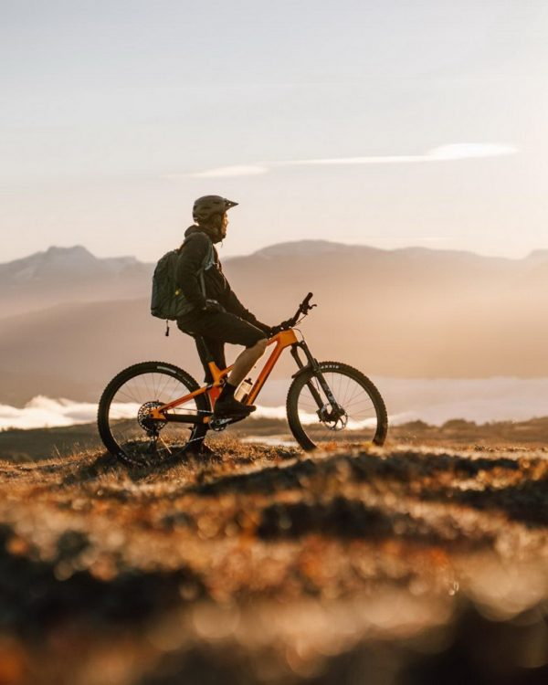
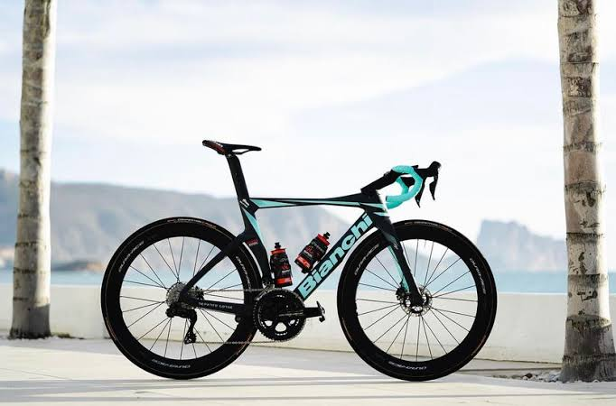
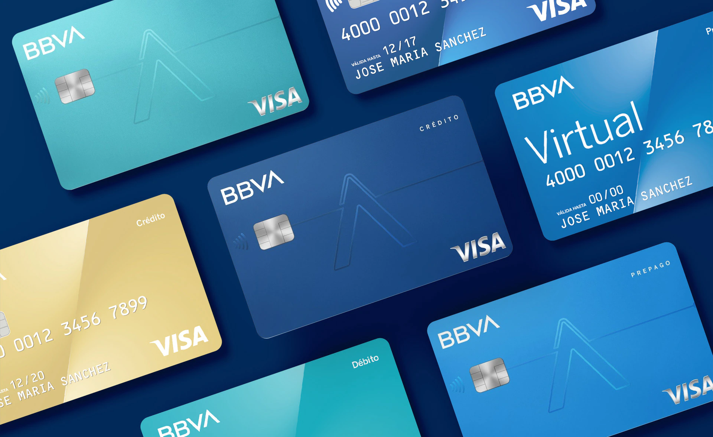

Rueda Libre | Alquiler de bicicletas en Medellín
Bienvenidos a Rueda Libre, la mejor tienda de alquiler en toda el área metropolitana.
¿Quieres visitarnos? Mira cómo llegar.

Nuestros servicios

Venta de bicicletas
Tenemos bicicletas de montaña, de ruta y urbanas para cada tipo de ciclista.
Todas las bicicletas se entregan armadas, revisadas y con garantía,
y te ayudamos a elegir la talla que mejor se adapte a ti.

Alquiler de bicicletas
Alquila una bicicleta por horas, días o semanas, ideal para pasear o
recorrer la ciudad. El alquiler incluye casco y candado,
así que solo tienes que preocuparte por disfrutar el recorrido.

Opciones de crédito
¿Quieres tu bicicleta, pero prefieres pagarla poco a poco? Ofrecemos
planes de crédito con cuotas mensuales fijas y un
proceso sencillo de aprobación, sin complicaciones ni letra pequeña.
Venta de bicicletas
Tenemos bicicletas de montaña, de ruta y urbanas para cada tipo de ciclista.
Todas las bicicletas se entregan armadas, revisadas y con garantía,
y te ayudamos a elegir la talla Que mejor se adapte a ti!
Alquiler de bicicletas
Alquila una bicicleta por horas, días o semanas, ideal para pasear o
recorrer la ciudad. El alquiler incluye casco y candado,
así que solo tienes que preocuparte por disfrutar el recorrido.
Opciones de crédito
¿Quieres tu bicicleta, pero prefieres pagarla poco a poco? Ofrecemos
planes de crédito con cuotas mensuales fijas y un
proceso sencillo de aprobación, sin complicaciones ni letra pequeña.
Nuestro medios de alquiler varian segun el pago, ya sea efectivo, tarjeta o sistemas de credito.
- Elige tu bicicleta según el tipo de recorrido que quieras hacer.
- Reserva por teléfono, por correo o directamente en el local.
-
Escoge tu medio de pago. Las condiciones del alquiler
varían según cómo pagues:
- Efectivo: pagas al recoger la bicicleta.
- Tarjeta: pagas en el local o al reservar.
- Sistemas de crédito: pagas en cuotas.
- Recoge tu bicicleta con casco y candado, y sal a rodar.
Beneficios del alquiler
- Casco y candado incluidos en todos los alquileres.
- Bicicletas revisadas antes de cada salida.
- Tres formas de pago: efectivo, tarjeta o crédito.
Rueda Libre
Vendemos, alquilamos y damos opciones de crédito para tus bicicletas.
¿Quieres visitarnos y mirar nuestros precios?
Aqui puedes encontrarlos!
Ver Tarifas
Si deseas reservar aqui tendras la opcion!
Reservar ahora